Interpretación Abstracta de Programas Logicos
Claudio Vaucheret
Created: 2021-04-03 sáb 01:44
Introducción
- analisis / sintesis de programas (Ciencias de la Computación)
- Probar que un programa \(P\) tiene tal propiedad (analisis de programas)
- Alternativamente: Derivar propiedades que tiene el programa \(P\)
Dado Un programa \(P\), generar un programa \(P'\) que sea:
- en algún sentido equivalente a P
- funcione mejor que \(P\) con respecto a algún criterio
(analisis / sintesis de programas)
- Aproximación Estandard:
- identificar que ocurre algún invariante y
- especializar el programa para el caso particular
Analisis de Programas
- Frecuente en compiladores aunque raramente tratados en modo formal:
- "optimización de código"
- "eliminación de codigo muerto"
- "movimiento de código"
- …
- Interpretación Abstracta provee un marco formal para desarrollar herramientas de análisis de programas
- Fase de Análisis + fase de sintesis ≡ Interpretación Abstracta + Transformación de Programas
¿Qué es la Interpretación Abstracta?
Considere detectar que una rama no ocurre:
int x,y,z; y:=read(file); x:= y * y; if x >= 0 then z := 1 else z:= 0- Analisis Exhaustivo en el dominio estandard: no termina
- Razonamiento humano de los programas - Usa abstracciones o aproximaciones: signos, ordenes de magnitud, par/impar, …
- Idea Básica: usar representaciones aproximadas (generalmente finitas) de los objetos computacionales para hacer tratable el problema del analisis del flujo del programa
- Analisis Abstracto es la formalización de esta idea:
- define una semantica no estandard que puede aproximar el significado o funcionamiento del programa en un modo finito
- las expresiones son computadas en un dominio (abstracto) aproximado en lugar del dominio concreto.
Ejemplo: La regla de los signos
- Consideremos el dominio \(D = Z\) (enteros)
- y el operador de multiplicación: \(* : Z^2 \to Z\)
- Definimos un dominio abstracto: \(D_\alpha = \{[-],[+]\}\)
y la multiplicación abstracta \(*_\alpha : {D_\alpha}^2 \to D_\alpha\) definido por:
\(*_\alpha\) \([-]\) \([+]\) \([-]\) \([+]\) \([-]\) \([+]\) \([-]\) \([+]\) - Esto nos permite razonar, por ejemplo, que \(y=x^2=x*x\) nunca es negativo
Algunas observaciones:
- si tenemos \(z = x * y\) entonces: si \(x,y \in Z\) son aproximados con \(x_\alpha, y_\alpha \in D_\alpha\) entonces \(z \in Z\) es aproximado con \(z_\alpha = x_\alpha * y_\alpha\)
- Es importante formalizar esta noción de aproximación para poder probar que un análisis es correcto
- La computación aproximada es generalmente menos precisa pero mas rápida.
Ejemplo: La regla de los signos (cont.)
- De nuevo \(D = Z\) (enteros)
- y el operador \(* : Z^2 \to Z\)
- Definimos un mas refinado dominio abstracto: \(D'_\alpha = \{[-],[0],[+]\}\)
y la multiplicación abstracta \(*_\alpha : {D'_\alpha}^2 \to D'_\alpha\) definido por:
\(*_\alpha\) \([-]\) \([0]\) \([+]\) \([-]\) \([+]\) \([0]\) \([-]\) \([0]\) \([0]\) \([0]\) \([0]\) \([+]\) \([-]\) \([0]\) \([+]\) - Esto nos permite razonar, que \(z=y*(0*x)\) es cero
Algunas observaciones:
- Hay un grado de libertad en definir operadores abstractos y dominios diferentes
- El requerimiento mínimo es que sea seguro o correcto
- Definiciones "seguras" diferentes llevan a clase de análisis diferentes
Ejemplo: La regla de los signos (cont.)
- De nuevo \(D = Z\) (enteros)
- y el operador de suma \(+ : Z^2 \to Z\)
- No podemos usar: \(D'_\alpha = \{[-],[0],[+]\}\) porque no sabríamos como representar el resultado de \([+] +_\alpha [-]\) (i.e. la suma abstracta no sería cerrada)
- Un nuevo elemento "\(\top\)" (supremum) que es la aproximación para todo entero
- Nuevo dominio abstracto: \(D''_\alpha = \{[-],[0],[+],\top\}\)
suma abstracta
\(+_\alpha : {D''_\alpha}^2 \to D''_\alpha\) definido por:
\(+_\alpha\) \([-]\) \([0]\) \([+]\) \(\top\) \([-]\) \([-]\) \([-]\) \(\top\) \(\top\) \([0]\) \([-]\) \([0]\) \([+]\) \(\top\) \([+]\) \(\top\) \([+]\) \([+]\) \(\top\) \(\top\) \(\top\) \(\top\) \(\top\) \(\top\) - Esto nos permite ahora razonar que \(z=x^2 + y^2\) nunca es negativo
Observaciones Importantes
- Además de la imprecisión debido a la "tosquedad" o lo "básico" de \(D_\alpha\), las versiones abstractas de las operaciones (que dependen de \(D_\alpha\)) pueden introducir mas imprecisión
- Así, la elección del dominio abstracto y la definición de las operaciones abstractas son cruciales.
Propiedades de la Interpretación Abstracta
- Requeridas:
- Exactitud - aproximaciones correctas: a causa de que las propiedades mas "interesantes" son indecidibles el análisis necesariamente tiene que ser aproximado. Queremos asegurarnos de que el análisis es "conservador" y se equivoca en el "lado seguro"
- Terminación - la compilación definitivamente debe terminar
- Deseable - "en la práctica"
- Eficiencia: en la práctica, el tiempo de análisis finito no es suficiente: finito y pequeño
- Precisión - de la información recopilada: depende de la idoneidad de el dominio abstracto y el nivel de detalle al que el procedimiento de interpretación imita la semántica del lenguaje
- Utilidad: determina qué información vale la pena recopilar
Aproximaciones Correctas
- Idea básica en aproximación: para alguna propiedad \(p\) queremos mostrar \[\forall x, x \in S \Rightarrow p(x)\] Alternativa: construir un conjunto \(S_a \supseteq S\) y demostrar \[\forall x, x \in S_a \Rightarrow p(x)\] entonces, \(S_a\) es una aproximación segura de \(S\)
- Aproximación de funciones: para alguna propiedad \(p\) queremos mostrar \[\forall x, x \in S \Rightarrow p(F(x))\]
- Una función \[G: S \rightarrow S\] es una aproximación segura de \(F\) si \[\forall x, x \in S, p(G(x)) \Rightarrow p(F(x))\]
Aproximación del significado de un programa
- El significado de un programa \(P\) es un mapeo \(F_P\) de entrada a salida, cuyos valores de entrada y salida \(\in\) a un dominio "estándar" \(D\): \[F_P: D \rightarrow D\]
- "Elevemos" este significado para asignar conjuntos de entradas a conjuntos de salidas \[F^*_P: \wp(D) \rightarrow \wp(D)\] donde \(\wp(S)\) denota el conjunto potencia de S, y \[F_P^*(S) = \{F_P(x) \arrowvert x \in S\}\]
- Una función \[G: \wp(D) \rightarrow \wp(D)\] es una aproximación segura de \(F_P^*\) si \[\forall S, S \in \wp(D), G(S) \supseteq F_P^*(S)\]
- Las propiedades se pueden demostrar usando \(G\) en lugar de \(F_P^*\)
Aproximación del significado de un programa (cont.)
- Para alguna propiedad \(p\) queremos mostrar que para las entradas - \(S, p(F_P^*(S))\)
- mostramos que para las entradas \(S_a, p(G(S_a))\)
- Dado que \(G(S_a) \supseteq F_P^*(S_a)\) para las entradas \(S_a, p(F_P^*(S_a))\) (Nota: abuso de notación - \(F_P^*\) no funciona con valores abstractos \(S_a\))
- Siempre que \(F_P^*\) sea monótono: \[S_a \supseteq S \Rightarrow F_P^*(S_a) \supseteq F_P^*(S)\]
- Y como \(S_a \supseteq S\), entonces: para las entradas \(S, p(F_P^*(S))\)
Dominio abstracto y función de concretización
- El dominio \(\wp(D)\) se puede representar mediante un dominio "abstracto" \(D_\alpha\) de representaciones finitas de (posiblemente) objetos infinitos en \(\wp(D)\)
- La representación de \(\wp(D)\) por \(D_\alpha\) se expresa mediante una función (monótona) llamada función de concretización: \[\gamma : D_\alpha → \wp(D)\] tal que \(\gamma(\lambda) = d\) si \(d\) es el elemento más grande (bajo \(\supseteq\)) de \(\wp(D)\) que \(\lambda\) describe [\((\wp(D), \supseteq)\) es obviamente una retículo completo]
Ejemplo
- En el ejemplo de los "signos", con \(D_\alpha = \{[-],[0],[+],\top \}\), \(\gamma\) viene dado por \[ \begin{align} \gamma([-]) &= \{x \in Z \arrowvert x < 0 \} \\ \gamma([0]) &= \{0\} \\ \gamma([+]) &= \{x \in Z \arrowvert x > 0\} \\ \gamma(\top) &= Z \\ \end{align} \]
- \(\gamma(?) = \emptyset \rightarrow\) definimos \(\bot \arrowvert \gamma(\bot) = \emptyset\)
Función de abstracción
También podemos definir (no estrictamente necesario) una función de abstracción (monótona) \[\alpha : \wp(D) \rightarrow D_\alpha\] \(\alpha(d) = \lambda\) si \(\lambda\) es el elemento "mínimo" de \(D_\alpha\) que describe \(d\) [bajo un orden adecuado definido en los elementos de \(D_\alpha\)]
p.ej. en el ejemplo de los "signos", \[ \begin{align} \alpha(\{1, 2, 3\}) &= [+] (no \top) \\ \alpha(\{- 1, −2, −3\}) &= [-] (no \top) \\ \alpha(\{0\}) &= [0] \\ \alpha(\{- 1, 0, 1\}) &= \top \\ \end{align} \]
Significado abstracto y seguridad
- Ahora podemos definir una función de significado abstracto como
\[F_\alpha : D_\alpha \rightarrow D_\alpha\] que es segura si
\[\forall \lambda, \lambda \in D_\alpha, \gamma(F_\alpha(\lambda))
\supseteq F^*_P(\gamma(\lambda))\]

- Entonces podemos probar una propiedad de la salida de una clase dada de entradas, probando que todos los elementos de \(\gamma(F_\alpha(\lambda))\) tienen tal propiedad
- P.ej. puede demostrarse, una propiedad como "si este programa toma un número positivo producirá un número negativo como salida"
Demostrar propiedades en abstracto
- Generando \(F_\alpha\):
- \(F_P\) obtenido del programa y la semántica predefinida de operadores \((x + z) ∗ 3\), \(F_P = (x + z) ∗ 3\)
- Análisis automático: \(F_\alpha\) debería obtenerse del programa y la semántica de operadores abstractos (propiedades compositivas) \(\{odd, even, +_\alpha, ∗_\alpha\} \Rightarrow F_\alpha = (x +_\alpha z) ∗_\alpha odd\)
- "Si este programa toma un número positivo, producirá un número negativo como salida"
- \(P = (y := x ∗ −3)\), entrada \(x\), salida \(y\)
- \(F_P = x ∗ −3\)
- \(F_\alpha = x ∗_\alpha [-]\)
- \(F_\alpha([+]) = [+] ∗_\alpha [-] = [-]\)
Semánticas Colectoras
- La semántica de "entrada-salida" es a menudo demasiado tosca para un análisis útil: información sobre el "Estado" en los puntos de programa generalmente requieren \(\to\) "semánticas extendidas"
- Los puntos del programa se pueden alcanzar muchas veces, desde diferentes puntos y en diferentes "Estados" \(\to\) "semanticas colectoras" \[\{x> 3\} y := x ∗ −3 \{y < −9 \} \mbox{ o } \{x < −3\} y := x ∗ −3 \{y > 9 \}\] \[\{x = [+]\} y := x ∗ −3 \{y = [-]\} \mbox{ o } \{x = [-]\} y := x ∗ −3 \{y = [+]\}\]
- El análisis a menudo calcula una colección de estados abstractos para un punto de programa. \[\{x = \{[+], [-]\}\} y := x ∗ −3 \{y = \{[-], [+]\}\}\]
- A menudo, es más eficiente "resumir" estados en uno que ofrezca la mejor descripción \(\to\) estructura de retículo en un dominio abstracto \[\{x = \sqcup \{[+], [-]\}\} y := x ∗ −3 \{y = \sqcup \{[-], [+]\}\}\]
Estructura de Retículo
- El ordenamiento en \(\wp(D), \subseteq\), induce un ordenamiento en \(D_\alpha, \leq_\alpha\) ("se aproxima mejor") Por ejemplo, podemos elegir \(\alpha(\{1, 2, 3\}) = [+] \mbox{ o } \alpha(\{1, 2, 3\}) = \top\), pero \(\gamma([+]) = \{x \in Z \arrowvert x > 0\} \mbox{ y } \gamma(\top) = Z\), y dado que \(\{x \in Z \arrowvert x > 0\} \subseteq Z\) tenemos \([+] \leq_\alpha \top\), es decir, \([+]\) se aproxima mejor que \(\top\), es mas preciso.
- Generalmente se requiere que \((D_\alpha, \leq_\alpha)\) sea una retículo completo
- Por lo tanto, para todo \(S \subseteq D_\alpha\) existe un único
mínimo límite superior \(\sqcup S \in D_\alpha\), es decir, tal que
- \(\forall \lambda_S \in S, \lambda_S \leq_\alpha \sqcup S\)
- \((\forall \lambda_S \in S, \lambda_S \leq_\alpha \lambda) \Rightarrow \sqcup S \leq_\alpha \lambda\)
- Intuición: dado un conjunto de aproximaciones del "estado actual" en
un punto dado en un programa, para asegurarse de que sea la mejor
descripción "general" para el punto:
- \(\sqcup S\) se aproxima a todos los elementos de \(S\)
- \(\sqcup S\) es la mejor aproximación en \(D_\alpha\)
Ejemplo: aritmética entera de signos
- Consideramos \(D_\alpha = \{[-], [0], [+],\top\}\)
- Agregamos \(\bot\) (infimum) para que \(\alpha(\emptyset)\) exista y para tener una retículo completo: \(D_\alpha = \{\bot, [-], [0], [+], \top\}\)
- (Intuición: representa un punto del programa que nunca será alcanzado)
- La función de concretización debe ampliarse con \[\gamma(\bot) = \emptyset\]
- El reticulo es:
- \(\sqcup\{[+],[-]\} = \sqcup\{[-],[+]\} = \top\)
Ejemplo: aritmética entera de signos (cont.)
- Para hacer \(t\) mas significativo, consideramos \(D_\alpha = \{\bot,[-],[0^-],[0],[0^+],[+],\top\}\)
| \(\gamma(\bot)\) | \(=\) | \(\emptyset\) | \(\gamma(\top)\) | \(=\) | \(Z\) | |
| \(\gamma([-])\) | \(=\) | \(\{x \in Z \arrowvert x < 0 \}\) | \(\gamma([+])\) | \(=\) | \(\{x \in Z \arrowvert x > 0 \}\) | \(\gamma([0]) = \{0\}\) |
| \(\gamma([0^-])\) | \(=\) | \(\{x \in Z \arrowvert x \leq 0 \}\) | \(\gamma([0^+])\) | \(=\) | \(\{x \in Z \arrowvert x \geq 0 \}\) |
- El reticulo es:
- \(\sqcup\{[-],[0]\} = [0^-]\) representa con precisión un punto del programa donde una variable puede ser negativa o cero
El enfoque de la inserción de Galois
- A continuación, nos referiremos a \(\wp(D)\) simplemente como \(D\)
- Las semánticas (colectoras) de los programas a menudo son dadas por \(lfp(F)\) (el mínimo \(S\) tal que \(S = F(S)\), Siendo \(F\) la función semántica dependiente del programa en \(D\))
- Por lo tanto, necesitamos relacionar este punto fijo con (el de) la función semántica aproximada \(F_\alpha\) (que se aproxima a \(F\) y opera sobre los elementos de un dominio abstracto \(D_\alpha\))
- Suponga: \(D\) y \(D_\alpha\) son retículos completos; \(\gamma :
D_\alpha \rightarrow D\) y \(\alpha : D \rightarrow D_\alpha\) son
funciones monotónicas. La estructura \((D_\alpha, \gamma, D, \alpha)\)
se denomina inserción de Galois si:
- \(\forall \lambda \in D_\alpha . \lambda = \alpha(\gamma(\lambda))\)
- \(\forall d \in D . d \subseteq \gamma(\alpha(d))\)
La Aproximación segura
- definida ahora en términos de una inserción de Galois: Sea una inserción de Galois \((D_\alpha, \gamma,D, \alpha), \lambda \in D_\alpha\) aproxima en forma segura a \(d \in D\) ssi \(d \subseteq \gamma(\lambda)\)
- Teorema fundamental [Cousot]: Dada una inserción de Galois \((D_\alpha, \gamma, D, \alpha)\) y dos funciones (monótonas) \(F: D \rightarrow D\) y \(F_\alpha: D_\alpha \rightarrow D_\alpha\) entonces si \(F_\alpha\) es una aproximación de \(F\), \(lfp(F_\alpha)\) es una aproximación de \(lfp(F)\)
Terminación: condiciones en \(F_\alpha\) y \(D_\alpha\)
- La pregunta es si \(lfp(F_\alpha)\) es finitamente computable
- El operador abstracto \(F_\alpha\) opera sobre los elementos de un dominio abstracto \(D_\alpha\), que hemos requerido que sea un retículo completo, y \(F_\alpha\) es monótona, por lo tanto \[lfp(F_\alpha) = F_\alpha \uparrow n\] para algún \(n\) que nos gustaría sea finito (es decir, nos gustaría que la secuencia de Kleene fuera finita)
- Recordando las características de los puntos fijos en retículos, la
secuencia de Kleene será finito en casos que incluyen:
- \(D_\alpha\) es finito
- \(D_\alpha\) es cadena ascendente finita
Estructura de Retículos
| finito | cadena finita ascendente |
|  | |
| finito en profundidad | |
Terminación: Discusión
- Demostrar la monotonicidad de \(F_\alpha\) puede ser más difícil que mostrar que \(D_\alpha\) cumple con las condiciones de finitud
- Puede haber un \(F_\alpha\) que termina incluso si no se cumplen las condiciones
- Las condiciones también se relajan restringiendo la clase de programas (por ejemplo, los programas no recursivos presentan pocas dificultades, aunque apenas son interesantes)
- En algunos casos, una aproximación desde arriba (\(gfp(F_\alpha)\)) también puede ser interesante
- Existen otras alternativas a la finitud: profundidad acotada dinámica, etc. (Ver: widening y narrowing)
Análisis de programas lógicos
- ¿Qué semántica?
- Semántica declarativa: relacionada a qué es una consecuencia del programa
- Semántica de la teoría de modelos mínimos
- Semántica de punto fijo (basada en el operador \(T_P\)) (cf. estilo de base de datos, evaluación bottom-up )
- Semántica operativa: cercana al comportamiento del programa
- Basado en resolución SLD (conjuntos éxitosos)
- Denotacional
- Puede cubrir posibilidades distintas a SLD: reactivo, paralelo, …
- Semántica declarativa: relacionada a qué es una consecuencia del programa
- Los análisis basados en semántica declarativa a menudo se denominan análisis bottom up
- Los análisis basados en la semántica operativa (de arriba hacia abajo) a menudo se denominan Análisis top down
- Además, casos intermedios (generalmente logrados mediante la transformación de programas)
Caso de Estudio: Semántica de punto fijo
- Dado el lenguaje de primer orden \(L\) asociado con un programa \(P\) dado, el universo de Herbrand (\(U\)) es el conjunto de todos los términos básicos de \(L\).
- La Base de Herbrand (\(B\)) es el conjunto de todos los átomos instanciados (ground) de \(L\).
- Una interpretación de Herbrand es un subconjunto de \(B\). \(I\) es el conjunto de todas las interpretaciones de Herbrand (\(\wp(B)\))
- Un modelo de Herbrand es una interpretación de Herbrand que contiene todos las consecuencias del programa.
- El operador de consecuencia inmediata (\(T_P\)) es un mapeo \(T_P : I \rightarrow I\) definido por: \[T_P(M) = \{h \in B \vert \exists C \in ground(P), C = h \leftarrow b_1, \ldots, b_n \mbox{ y } b_1, \ldots, b_n \in M\}\] (en particular, si (\(a \leftarrow\)) ∈ \(P\), entonces \(ground(a) \subseteq T_P(M)\), para cada \(M\)).
- \(T_P\) es monótono, por lo que tiene un minimo punto fijo \(lfp(T_P)\) que se puede obtener como \(T_P \uparrow \omega\) comenzando desde el elemento inferior del retículo (la interpretación vacía, \(\emptyset\)).
- (Teorema de caracterización) [Van Emden y Kowalski]: El menor modelo de Herbrand \(P\), \(H\) es \(lfp(T_P)\)
Semántica de punto fijo: Ejemplo
\(P = \{ p(f(X)) \leftarrow p(X). \\ p(a). q(a). q(b). \}\)
Interpretación abstracta "Bottom up"
- Encuentra una aproximación de \(H\) al aproximar \(lfp(T_P)\)
- Aplicamos interpretación abstracta:
- Dominio: \(I^\alpha\), tal que elementos de \(I^\alpha\) son aproximaciones de elementos de \(I = \wp(B)\).
- Función de concretización: \(\gamma: I^\alpha \rightarrow I\)
- Función de abstracción: \(\alpha: I \rightarrow I^\alpha\)
- Operador Abstracto: versión abstracta del operador \(T_P\) \(T^\alpha_P : I^\alpha \rightarrow I^\alpha\)
Interpretación abstracta "Bottom up" (cont.)
- Aplicamos interpretación abstracta:
- Exactitud:
- \((I^\alpha, \gamma, I, \alpha)\) debe ser una inserción de Galois, es decir, \(I^\alpha\) retículo completo y debería aproximar a \(I: \forall M \in I, \gamma(\alpha(M)) \supseteq M\)
- \(T^\alpha_P\) aproximación segura de \(T_P\), es decir, \(\forall d, d \in I^\alpha, \gamma(T^\alpha_P(d)) \supseteq T_P(\gamma(d))\)
- Terminación:
- \(T^\alpha_P\) es monótono.
- \(I^\alpha\) (al menos) cadena ascendente finita.
- Exactitud:
- Entonces, \(H^\alpha = lfp(T^\alpha_P) = T^\alpha_P \uparrow n\) se obtendrá en un número finito de pasos \(n\) y \(H^\alpha\) se aproximará a \(H\).
Interpretación abstracta "Bottom up" (cont.)
Ejemplo: simple inferencia de "tipos"
- Problema de "inferencia de tipo" mínimal [Sondergaard]: Aproximación de qué predicados están en \(H\)
- \(pred(a):\) denota el símbolo de predicado de un átomo \(a\)
- \(B^\alpha = S\) (conjunto de símbolos de predicado en un programa \(P\)) Entonces \(I^\alpha = \wp(S)\), lo llamamos \(S^*\)
- Función de concretización:
- \(\gamma: S^* \rightarrow I\)
- \(\gamma(D) = \{a \in B | pred(a) \in D \}\)
- Función de abstracción:
- \(\alpha: I \rightarrow S^*\)
- \(\alpha(M) = \{p \in S | \exists a \in M, pred(a) = p \}\)
- \((S^*, \gamma, I, \alpha)\) es una inserción de Galois.
Ejemplo: simple inferencia de "tipos" (cont.)
- Versión abstracta de \(T_P\) (después de alguna simplificación): \[T_P \alpha: S^* \rightarrow S^*\]
\(T^\alpha_P(D) = \{p \in S | \exists C \in P, C = h \rightarrow b_1, \ldots, b_n, \\ pred(h) \leftarrow pred(b_1), \ldots , pred(b_n) \equiv p \leftarrow p_1,\ldots , p_n, \\ \mbox{ y } p_1,\ldots , p_n \in D\}\)
- \(S^*\) finito (número finito de símbolos de predicado en el programa) y \(T^\alpha_P\) monótona \(\to\) El análisis terminará en un número finito de pasos \(n\) y \(H^\alpha = T^\alpha_P \uparrow n\) se aproxima a \(H\).
Ejemplo: simple inferencia de "tipos" (cont.)
- Ejemplo:
\[P = \{p(f(X)) \leftarrow p(X). p(a). r(X) ← t(X,Y). q(a). q(b). \}\]
\[P_\alpha = \{p \leftarrow p. p. r ← t. q.\} \]
- \(S = \{p/1, q/1, r/1, t/2\}\)
- Abstracción: \(\alpha(\{p(a), p(b), q(a)\}) = \{p/1, q/1\}\)
- Concretización:
- Análisis:
\(T^\alpha_P \uparrow 0 = T^\alpha_P(\emptyset) = {p / 1, q / 1}\)
\(T^\alpha_P \uparrow 1 = T^\alpha_P(\{p/1, q/1\}) = \{p/1, q/1\} = T^\alpha_P \uparrow 0 = H^\alpha\)
Análisis bottom up basado en \(T_P\): Discusión
- Ventajas:
- Simple y elegante. Basado en la semántica declarativa de punto fijo
- General: resultados independientes de la consulta
- Desventajas:
- Información solo sobre "salida del procedimiento". Normalmente se necesita información en varios puntos del programa en la compilación, por ejemplo, "patrones de llamada"
- La “variable lógica” no es observada (usa datos instanciados). Información sobre estado de instanciación, sustituciones, etc. a menudo necesarios en la compilación
- No dirigido a consultas: analiza el programa completo, no la parte (y los modos) que corresponden al uso "normal" (expresado a través de una consulta)
Análisis Top down (resumido)
- Definir una semántica concreta extendida (recolectora), derivada de la resolución SLD, haciendo observable la información relevante.
- Dominio abstracto: generalmente "sustituciones abstractas".
- Operaciones abstractas: unificación, composición, proyección, extensión, …
- Función semántica abstracta: toma una forma de consulta (abstracción del objetivo inicial o conjunto de metas iniciales) y el programa y devuelve descripciones abstractas de la sustituciones en puntos relevantes del programa.
- Las variables complican las cosas:
- corrección (debido al aliasing),
- terminación (fusión de información relacionada con aliasing)
- Las variables lógicas son, de hecho, punteros (que se comportan bien): X = tree(N,L,R),L = nill, Y = N, Y = 3, …
- esto hace que el análisis de programas lógicos sea muy interesante (y bastante relevante para otros paradigmas).
Arbol AND-OR abstracto
- Exploración del árbol
?- p. h:- p1, ... pn. - Operacons Basicas:
- Procedure entry: de \(\lambda_{call}\) obtiene \(\beta1_{entry}\)
- Entry-to-exit (b): de \(\beta1_{entry}\) obtiene \(\beta1_{exit}\)
- Clause entry: de \(\beta1_{entry}\) obtiene \(\lambda_1\) (y clause exit)
- Body traversal: de \(\lambda_1\) obtiene \(\lambda_{n+1}\) (iterativamente aplicando (a))
- Procedure exit: de (each or all of the) \(\beta{i}_{exit}\) obtiene \(\lambda_{success}\)
Optimización de Punto Fijo
- Punto fijo es requerido solo en los predicados recursivos:
- Recursivo simple (a)
- Mutuamente Recursivos (b) "Usa la sustitución de exito actual e itera hasta que el punto fijo es alcanzado"
Ciaopp
- Entrada
- Programas Lógicos
- aserciones y extensiones sintácticas (opcionalmente)
- Salida
- Mensajes de Errores
- Programa Transformado con:
- Resultados de analisis (como aserciones)
- Resultados de chequeo estático de aserciones
- Aserciones de chequeo en tiempo de ejecución
- Optimizaciones (especialización, paralelización, etc).
Aserciones
- estado de las aserciones
check(default) – Es la semántica intentada, para ser chequeada, es la especificación del programa, ingresada por el usuario.trust– semántica real, ingresada por el usuario y creída por el compilador (es una guía).trueofalse– semántica real, salida del compilador.checked– validación: es uncheckque ha sido probado. (igual atrue).
ejemplo
:- trust pred is(X,Y) => (num(X),numexpr(Y)). :- check pred p/2 : list(int) * var => list(int) * int. :- modedef +X : nonvar(X). :- check pred sortints(+L,-SL) :: list(int) * list(int) + sorted(SL) # "@var{SL} has same elements as @var{L}.".
Propiedades del estado de éxito
Propiedades del estado de éxito. Son similiares en naturaleza a las postcondiciones usadas en verificación de programas
:- success Goal => Postcond.debe ser interpretada como "para toda llamada de la forma
Goalque tiene éxito, al momento del éxitoPostconddebería ser verdadero".Restricción de las aserciones a un subconjunto de las llamadas
:- success Goal : Precond => Postcond.debe ser interpretada como "para toda llamada de la forma
Goalpara la cualPredcondocurre, si la llamada tiene éxito, al momento del éxitoPostconddebería ser verdadero".
Propiedades en la llamada y computación
Propiedades en el estado de llamada de un predicado que pueden aparecer en tiempo de ejecución.
:- calls Goal : Cond.se debe interpretar "toda llamada de la forma
Goaldebería satisfacerCond".Propiedades de la computación
:- comp Goal : Precond + Comp_prop.se debe interpretar "para toda llamada de la forma
Goalpara la cualPrecondocurre,Comp_propdebería ocurrir también para la computación deGoal".
Composición de Aserciones
Para facilitar la escritura una aserción compuesta de un predicado puede ser usado como azúcar sintáctico para las aserciones básicas. La aserción compuesta siguiente
:- pred Pred : Precond => Postcond + Comp_prop.
corresponde a la siguiente aserción de éxito:
:- success Pred : Precond => Postcond.
si la aserción pred tiene un campo => (y un campo
:). También corresponde a una aserción de computación de la forma:
:- comp Pred : Precond + Comp_prop.
si la aserción pred tiene los campos + y :
Ejemplo de aserciones compuestas
- Consideremos el programa clasico quicksort
qsort. Podemos usar la
siguiente aserción para requerir que la salida del procedimiento
qsort sea una lista.
:- success qsort(A,B) => list(B).
alternativamente podemos requerir que
qsortes llamado con una lista en su primer argumento y tiene exito, entonces el segundo argumento también sera una lista.:- success qsort(A,B) : list(A) => list(B).
La diferencia reside en que se espera que B sea una lista en los casos en que A sea una lista.
Ejemplo de aserciones compuestas (cont.)
Además podemos requerir que en todas las llamadas al predicado
qsortel primer argumento debe ser una lista::- calls qsort(A,B) : list(A).El procedimiento
qsortdebe ordenar cualquier lista. Asi, requeriremos que todas las llamadas con una lista en el primer argumento y una variable en el segundo no fallen::- comp qsort(A,B) : (list(A) , var(B)) + does_not_fail.
Ejemplo de aserciones compuestas (cont.)
En lugar de todas estas aserciones se puede usar la compuesta:
:- pred qsort(A,B) : (list(A) , var(B)) => list(B) + does_not_fail.
que es equivalente a:
:- calls qsort(A,B) : (list(A), var(B)).
:- success qsort(A,B) : (list(A), var(B)) => list(B).
:- comp qsort(A,B) : (list(A) , var(B)) + does_not_fail.
Ejemplo de aserciones compuestas (cont.)
si queremos llamar a qsort con algo diferente a una variable en el
segundo argumento se debe agregar:
:- pred qsort(A,B) : (list(A) , var(B)) => list(B) + does_not_fail.
:- pred qsort(A,B) : list(A) => list(B).
que es equivalente a:
:- calls qsort(A,B) : ((list(A), var(B)) ; list(A)).
:- success qsort(A,B) : ((list(A), var(B)) ; list(A)). => list(B).
:- comp qsort(A,B) : (list(A) , var(B)) + does_not_fail.
Tipos Regulares
Tipos Regulares son propiedades cuyas definiciones son "programas regulares". Ejemplos:
:- regtype tree(X) # "X is a tree.".
tree(nil).
tree(t(_,L,R)):-
tree(L),
tree(R).
:- regtype intlist(X) # "X is a list of integers"
intlist([]).
intlist([X|R]) :- int(X), intlist(R).
Lenguaje de aserciones
ejemplo de
pred/1:- pred length(L,N) : list * var => list * integer # "Computes the length of L.". :- pred length(L,N) : var * integer => list * integer # "Outputs L of length N.". :- pred length(L,N) : list * integer => list * integer # "Checks that L is of length N.".ejemplo de
pred/2:- check pred length(L,N) : list * var => list * integer.ejemplo de
comp/1:- comp append(Xs,Ys,Zs) : var * var * var + not_fail.testes similar asuccesspero especifica un caso de test como parte de la especificación del predicado:- test length(L,N) : ( L = [1,2,5,2] ) => ( N = 4 ).
Lenguaje de aserciones (cont.)
definición de nuevos modos
:- modedef +A : nonvar(A) # "A is bound upon predicate entry.". :- pred p(+A,B) : integer(A) => ground(B).es equivalente a:
:- pred p(A,B) : (nonvar(A),integer(A)) => ground(B) # "A is bound upon predicate entry.".documentación
:- doc(Pred,Comment). :- doc(p(A,B),"A is bound upon predicate entry.").
Ciaopp

Analisis
Entrada
:- module(app, [app/3], [assertions]). :- entry app(A,B,C) : (list(A), list(B)). app([],Y,Y). app([X|Xs], Ys, [X|Zs]) :- app(Xs,Ys,Zs).Salida
:- true pred app(A,B,C) : ( list(A), list(B), term(C) ) => ( list(A), list(B), list(C) ). :- true pred app(A,B,C) : mshare([[A],[A,B],[A,B,C],[A,C],[B],[B,C],[C]]) => mshare([[A,B,C],[A,C],[B,C]]).
Analisis
Entrada
:- module(qsort, [qsort/2], [assertions]). :- entry qsort(A,B) : (list(num, A), var(B)). qsort([X|L],R) :- partition(L,X,L1,L2), qsort(L2,R2), qsort(L1,R1), append(R2,[X|R1],R). qsort([],[]). partition([],_B,[],[]). partition([E|R],C,[E|Left1],Right):- E < C, !, partition(R,C,Left1,Right). partition([E|R],C,Left,[E|Right1]):- E >= C, partition(R,C,Left,Right1). append([],X,X). append([H|X],Y,[H|Z]):- append(X,Y,Z).
Analisis
dominio shfr sin el ~:- entry … ~
:- true pred qsort(_A,R) : mshare([[_A],[_A,R],[R]]) => mshare([[_A,R]]). :- true pred partition(_A,_B,Left,Right) : ( mshare([[_A],[_A,_B],[_B],[Left],[Right]]), var(Left), var(Right) ) => ( mshare([[_B]]), ground([_A,Left,Right]) ). :- true pred append(_A,X,_B) : ( mshare([[X],[X,_B],[_B]]), ground([_A]) ) => ( mshare([[X,_B]]), ground([_A]) ).
Analisis
dominio shfr con el
:- entry qsort(A,B) : (list(num, A), var(B)).:- true pred qsort(A,B) : ( mshare([[B]]), var(B), ground([A]) ) => ground([A,B]). :- true pred partition(_A,_B,Left,Right) : ( mshare([[Left],[Right]]), var(Left), var(Right), ground([_A,_B]) ) => ground([_A,_B,Left,Right]). :- true pred append(_A,X,_B) : ( mshare([[_B]]), var(_B), ground([_A,X]) ) => ground([_A,X,_B]).
Analisis
dominio eterms sin
:- entry qsort(A,B) : (list(num, A), var(B)).:- true pred qsort(_A,R) : ( term(_A), term(R) ) => ( list(_A), list(R) ). :- true pred partition(_A,_B,Left,Right) : ( term(_A), term(_B), term(Left), term(Right) ) => ( list(arithexpression,_A), term(_B), list(arithexpression,Left), list(arithexpression,Right) ). :- true pred append(_A,X,_B) : ( list(_A), non_empty_list(X), term(_B) ) => ( list(_A), non_empty_list(X), non_empty_list(_B) ).
Analisis
dominio eterms con
:- entry qsort(A,B) : (list(num, A), var(B)).:- true pred qsort(A,B) : ( list(num,A), term(B) ) => ( list(num,A), list(num,B) ). :- true pred partition(_A,_B,Left,Right) : ( list(num,_A), num(_B), term(Left), term(Right) ) => ( list(num,_A), num(_B), list(num,Left), list(num,Right) ). :- true pred append(_A,X,_B) : ( list(num,_A), list1(num,X), term(_B) ) => ( list(num,_A), list1(num,X), list1(num,_B) ).
Debugging
Entrada
:- module(qsort, [qsort/2], [assertions]). :- entry qsort(A,B) : (list(num, A), var(B)). qsort([X|L],R) :- partition(L,X,L1,L2), qsort(L2,R2), qsort(L1,R1), append(R2,[x|R1],R). % <-- 'x' should be X (variable) qsort([],[]). partition([],_B,[],[]). partition([E|R],C,[E|Left1],Right):- E < C, !, partition(R,C,Left1,Right). partition([E|R],C,Left,[E|Right1]):- E >= C, partition(R,C,Left,Right1). append([],X,X). append([H|X],Y,[H|Z]):- append(X,Y,Z).
Debugging
Salida
:- true pred qsort(A,B) : ( list(num,A), term(B) ) => ( list(num,A), list(^(x),B) ).
Debugging
Entrada
:- module(_, [qsort/2], [assertions]). :- entry qsort(A,B) : (list(num, A), var(B)). qsort([X|L],R) :- partition(L,L1,X,L2), % <-- swapped second and third arguments qsort(L2,R2), qsort(L1,R1), append(R2,[X|R1],R). qsort([],[]). partition([],_B,[],[]). partition([e|R],C,[E|Left1],Right):- % <-- 'e' should be E (variable) E < C, !, partition(R,C,Left1,Right). partition([E|R],C,Left,[E|Right1]):- E >= C, partition(R,C,Left,Right1). append([],X,X). append([H|X],Y,[H|Z]):- append(X,Y,Z).
Debugging
Salida
{In /home/claudio/tmp/orgfiles/data/ciaopp/clase2/hacerslides/debugging/qsort2.pl WARNING (preproc_errors): (lns 4-8) goal qsort2:partition(L,L1,X,L2) at literal 1 does not succeed! } {ERROR (ctchecks_messages): error printing:message_clause_incompatible(qsort2:partition/4/2,eterms ,qsort2:partition([e|C],A,[D|E],B),[A,B,C,D,E],[C,Right,R,E,Left1]) } {In /home/claudio/tmp/orgfiles/data/ciaopp/clase2/hacerslides/debugging/qsort2.pl WARNING (preproc_errors): (lns 14-15) goal arithmetic:>=(E,C) at literal 1 does not succeed!
Debugging
Chequear Aserciones
:- module(qsort3, [qsort/2], [assertions,regtypes,nativeprops]). :- entry qsort(A,B) : (list(num, A), var(B)). :- calls qsort(A,B) : list(num, A). % A1 :- success qsort(A,B) => (ground(B), sorted_num_list(B)). % A2 :- calls partition(A,B,C,D) : (ground(A), ground(B)). % A3 :- success partition(A,B,C,D) => (list(num, C),ground(D)). % A4 :- calls append(A,B,C) : (list(num,A),list(num,B)). % A5 :- prop sorted_num_list/1. sorted_num_list([]). sorted_num_list([X]):- number(X). sorted_num_list([X,Y|Z]):- number(X), number(Y), X=<Y, sorted_num_list([Y|Z]). qsort([X|L],R) :- partition(L,X,L1,L2), qsort(L2,R2), qsort(L1,R1), append(R2,[x|R1],R). qsort([],[]). partition([],_B,[],[]). partition([E|R],C,[E|Left1],Right):- E < C, !, partition(R,C,Left1,Right). partition([E|R],C,Left,[E|Right1]):- E >= C, partition(R,C,Left,Right1). append([],X,X). append([H|X],Y,[H|Z]):- append(X,Y,Z).
Optimización
Entrada
:- module(_, [dup_first/2], []). dup_first([X|Xs], Zs) :- app([X], [X|Xs], Zs). app([],Y,Y). app([X|Xs], Ys, [X|Zs]) :- app(Xs,Ys,Zs).Salida
:- module(_1,[dup_first/2],[assertions]). dup_first([A|B],[A,A|B]).
Optimización
Entrada
:- module(append,[appe/3],[assertions] ) . :- entry appe(A,B,C). appe(A,B,C) :- append([1,2,3|A],B,C). append([],X,X). append([H|X],Y, [H|Z]):- append(X,Y,Z) .Salida
:- module(_1,[appe/3],[assertions]). :- entry appe(A,B,C). appe([],A,[1,2,3|A]). appe([B|C],A,[1,2,3,B|D]) :- append_1(C,A,D). append_1([],A,A). append_1([B|C],A,[B|D]) :- append_1(C,A,D).
Optimización
Entrada
:- module(exponential_ac, [ent/2], [assertions]) . :- entry ent(Base,_) : int(Base). ent(Base,Res) :- exp(Base,3,Res). exp(Base,Exp,Res):- exp_ac(Exp,Base,1,Res). exp_ac(0,_,Res,Res). exp_ac(Exp,Base,Tmp,Res) :- Exp > 0, Expl is Exp - 1, NTmp is Tmp * Base, exp_ac(Expl,Base,NTmp,Res).
Optimizacion
Salida
:- module(_1,[ent/2],[assertions]). :- entry ent(Base,_A) : int(Base). ent(A,B) :- C is A, D is C*A, E is D*A, exp_ac_1(A,E,B). exp_ac_1(_1,A,A).
Certificación
Entrada
:- module(multiply,_,[assertions]). :- entry mmultiply(X,Y,Z): (var(Z),list(X,list(num)),list(Y,list(num))). :- entry mmultiply(X,Y,Z) : (var(Z),ground(X),ground(Y)). mmultiply([],_,[]). mmultiply([VO|Rest],V1,[Result|Others]):- mmultiply(Rest,V1,Others), multiply(V1,VO,Result). multiply([],_,[]). multiply([VO|Rest],VI,[Result|Others]):- multiply(Rest,VI,Others), vmul(VO,VI,Result). vmul([],[],0). vmul([H1|T1],[H2|T2],Result):- vmul(T1,T2,Newresult), Product is H1*H2, Result is Product+Newresult.
Certificación
Certificado
:- true pred A is B+C : (mshare([[A]]),var(A),ground([B,C])) => (ground([A,B,C])). :- true pred A is B*C : (mshare([[A]]),var(A),ground([B,C])) => (ground([A,B,C])). :- true pred A is B+C : (term(A),num(B),num(C)) => (num(A),num(B),num(C)). :- true pred A is B*C : (term(A),num(B),num(C)) => (num(A),num(B),num(C)).